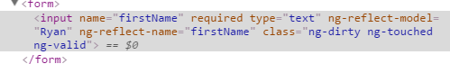
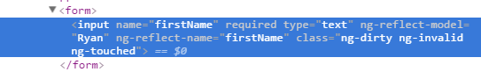
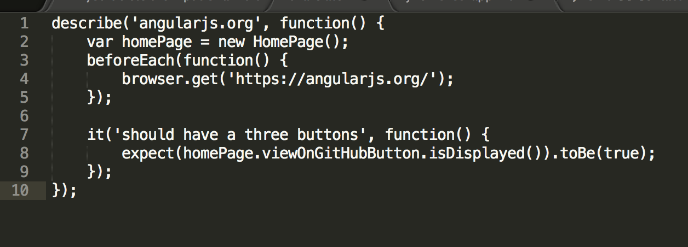
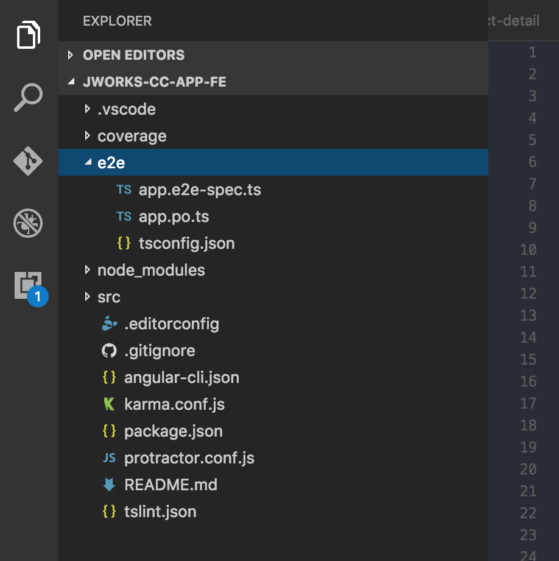
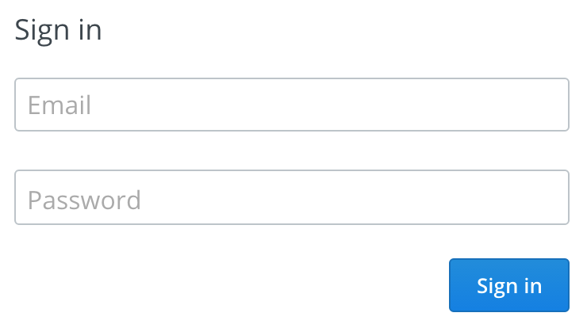

Angular2 the story part 2
Resources
- https://github.com/ordina-jworks/automation-tooling //presentation & exercises
- https://github.com/VeeTeeDev/jworks-cc-app-fe //App
Hi, my name is Tim.
CC-Lead: Automation & Tooling
Developer
Ordina Belgium
@VeeTeeDev
https://github.com/VeeTeeDev
Hi, my name is Ryan.
Front-End Dev
Angular pro
Ordina Belgium
@ryandegruyter
https://github.com/ryandegruyter
Hi, my name is Dimitri.
Front-End Ninja
Angular2 enthousiast
Ordina Belgium
@dimidekerf
https://github.com/dimidekerf
Router
- Introduction
- Theory
- Examples
- Exercise
Forms
- Introduction
- Template forms
- Reactive forms
- Validation
- Testing
- Exercise
E2E
- What is e2e
- Frameworks
- Protractor
- Example
- Exercise
Routers
Navigating through our app
How does navigation works?
- URL changes in browser
- Router determines matching component for route
- Router replaces components
Capabilities
- Navigating through URLs
- Passing parameters
- Links on page
- Users actions such as clicks
- History, back button browser
RouterModule
Angular module for navigation through application
RouterModule.forRoot([
{ path: 'home', component: HomeComponent },
{ path: 'cat', component: CatComponent },
{ path: '', component: HomeComponent },
{ path: '**', component: PageNotFoundComponent }
])
<base href="/">
- First element in head
- Compose navigation URLs
- Root for server
- Required for most applications
<html>
<head>
Router Outlet
Router displays component in router outlet
RouterLink & RouterLinkActive
- Defines path for Router
- Add css for active link
Angular Router
Navigating from Component
Use navigate function of router, optionally passing params with it
export class CatListComponent {
constructor(private router: Router) {}
onSelect(cat: Cat) {
this.router.navigate(['/cat', cat.id]);
}
}
ActivatedRoute
Service which provides route information such as URL, params,...
export class CatDetailComponent implements OnInit {
constructor(
private activatedRoute: ActivatedRoute,
private router: Router,
private service: CatService
) {}
ngOnInit() {
this.activatedRoute.params.subscribe((params: Params) => {
let id = params['id'];
this.service.getCat(id).then(cat => this.cat = cat);
});
}
gotoCats() {
this.router.navigate(['/cats']);
}
}
Feature modules
Module in our app containing a specific feature
RouterModule.forChild([
{ path: 'cat-list', component: CatListComponent },
{ path: 'cat/:id', component: CatDetailComponent }
])
Configuration of router with RouterModule.forChild()
Child routes
Allows embedding of multiple routes
Child routes
- Using RouterOutlet of CatDashboardComponent instead of AppComponent
- Router appends child paths to parent URL:
/cat-dashboard/cat-list/1
RouterModule configuration
RouterModule.forChild([
{
path: 'cat-dashboard',
component: CatDashboardComponent,
children: [
{
path: '',
redirectTo: '/cat-list',
pathMatch: 'full'
}, {
path: '/cat-list',
component: CatListComponent,
children: [
{
path: '',
component: CatIntroComponent
}, {
path: ':id',
component: CatDetailComponent
}
]
}
]
}
])
Testing routed component
Stub the Router and configure it in the Test
class RouterStub {
navigateByUrl(url: string) { return url; }
}
beforeEach( async(() => {
TestBed.configureTestingModule({
providers: [
{ provide: CatService, useClass: CatServiceStub },
{ provide: Router, useClass: RouterStub }
]
})
.compileComponents().then(() => {
fixture = TestBed.createComponent(CatDashboardComponent);
component = fixture.componentInstance;
});
Testing routed component
Check if navigateUrl has been called with expected url
it('should tell Router to navigate when a cat was clicked',
inject([Router], (router: Router) => {
const spy = spyOn(router, 'navigateByUrl');
catClick();
const navArgs = spy.calls.first().args[0];
const id = component.cats[0].id;
expect(navArgs).toBe('/cat/' + id);
}
));
Exercise:
Create new component
Create router
Adjust
Angular2 Forms
3 ways to create forms
Template driven forms
Reactive forms
Mix of both
Template driven forms
Template source of truth
validation and controls are defined in the template
Uses ngModel
Quick and easy
FormsModule
Reactive forms
aka model driven forms
component source of truth
validation and controls defined in the component
FormBuilder, FormControl, FormGroup
No ngModel
More code but more powerful
ReactiveFormsModule
FormControl
Tracks the validity and value of a form control element
ngModel
Creates and Binds a FormControl instance to a form control element
Easy 2 way binding
Exercise
https://goo.gl/DCmvEqValidation
Built-in validators
- required
- minlength
- maxlength
- pattern
Custom validators
Return an error object or null if valid
(ctrl:AbstractControl): {[error: string]:any};
Error messaging
ngModel and AbstractControl offer error objects for each validator
Access the errors with
- template reference to ngModel (template driven)
- AbstractControl instance (reactive)
Template reference variables
Get a reference to a DOM element or directive / component
Template
< input type="text" #inputRef >
Component
@Component({...})
export class MyComponent{
@ViewChild('inputRef')
inputElement:ElementRef;
ngAfterViewInit(){
// access element
}
}
Exercise
FormGroup, ngForm, ngModelGroup
Group together form control elements
Track validity and values of grouped control elements
ngForm is the top level FormGroup
Angular adds an ngForm directive to each form element
ngModelGroup are also FormGroups but subgroups of ngForm
Submitting a form
use the ngSubmit directive to submit a form
prevents the default behavior of making an http post request
Exercise
Validation styling
ngModel automatically applies style classes
easily add your own styles simply by declaring the styles in your Component decorator
 Input states
All styleable
- valid <-> invalid
- touched <-> untouched
- pristine <-> dirty
Exercise
RxJS Streams with form controls
FormControl has 2 streams
- valueChanges
- statusChanges
Testing components that use the FormsModule (or ReactiveFormsModule)
Use TestBed
beforeEach(()=>{
TestBed.configureTestingModule({
imports: [
// you must import this so that [(ngModel)] is recognized.
FormsModule
],
schemas: [
// NO_ERRORS_SCHEMA will hide that angular doesn't know about ngModel
]
});
E2E
End To End Testing
What is E2E testing
End-to-end testing is a methodology used to test whether the flow of an application is performing as designed from start to finish.
Past
- Manual
- Slow
- Expensive
Who wants to do this ?
Automation
We want to script and automate our tests.
How ? A framework to the rescue ?
Same as with javascript frameworks... so many alternatives
Frameworks in all flavors
End 2 End testing has nothing to do with fron-end development. There are solutions in Java, Python, C#, ... and Javascript
Selenium (Java)
http://www.seleniumhq.org
Robot (Python)
http://robotframework.org
Nightwatch.js (Node)
http://nightwatchjs.org/
Cause winter is coming!
Protractor
http://www.protractortest.org/
Pushed by Angular
In common
Flow
- Get element from DOM
- Do something
- Check outcome
Webdriver
Why Protractor ?
- Pushed by google
- Even mentioned in angular docs
- Javascript, by dev ?
Comes out of the box when creating you Angular 2 app with angular-cli.
Basics for setup
$ npm install -g protractor
$ webdriver-manager update
$ webdriver-manager start
Protractor works with Selenium WebDriver, a browser automation framework. Selenium WebDriver supports several browser implementations or drivers which are discussed below.
Angular-cli - Protractor
Config
"scripts": {
"start": "ng serve",
"lint": "tslint \"src/**/*.ts\"",
"test": "ng test",
"pree2e": "webdriver-manager update",
"e2e": "protractor"
},
"e2e": {
"protractor": {
"config": "./protractor.conf.js"
}
},
Package.json, angular-cli.json
Config
var SpecReporter = require('jasmine-spec-reporter');
exports.config = {
allScriptsTimeout: 11000,
specs: [
'./e2e/**/*.e2e-spec.ts'
],
capabilities: {
'browserName': 'chrome'
},
directConnect: true,
baseUrl: 'http://localhost:4200/',
framework: 'jasmine',
jasmineNodeOpts: {
showColors: true,
defaultTimeoutInterval: 30000,
print: function() {}
},
useAllAngular2AppRoots: true,
beforeLaunch: function() {
require('ts-node').register({
project: 'e2e'
});
},
onPrepare: function() {
jasmine.getEnv().addReporter(new SpecReporter());
}
};
protractor.conf.js
Config
- browserName: firefox, chrome, ...
- capabilities - multiCapabilities
- baseUrl: localhost, ...
- framework: jasmine, mocha, cucumber, ...
Running e2e
$ ng e2e
Example: Login

Example: First things first
- Open browser //webdriver load instance
- Navigate to specific page //navigate to login page
- Grab elements //get username-field, password-field, login-button from DOM
- Do stuff //insert username, insert password, click login-button
- Check if login was successful
Example: Selectors / Actions
- browser.get('url/id/edit');
- element(by.css('aSeLeCtOr')); //ElementFinder
- element.all(by.css('aSeLeCtOr')).get(0); //ElementFinder
- this.$button.click(); //Promise
- describe it expect(browser.getTitle()).toEqual('Super Calculator');
- ...
Example: PO - Page Objects
Map our pages with e2e page objects
export class LoginPage extends PageObject{
private usernam;
private password;
private loginButton;
constructor() {
super();
this.$username = element(by.css('#username'));
this.$password = element(by.css('.js-password'));
this.$loginButton = element(by.css('.js-login'));
}
getUsernameEl():ElementFinder {
return this.$username;
}
getPasswordEl():ElementFinder{
return this.$password;
}
setPassword(password:string){
this.$password.sendKeys(password);
}
clickOnSave():Promise{
return this.saveButton.click();
}
}
Example: Write scenario
import {LoginPage} from './login.po';
describe('Login Page', function () {
let page: LoginPage;
beforeEach(() => {
page = new LoginPage();
page.navigateTo();
});
it('should have a username field', ()=> {
page.getUsernameEl()
.isPresent()
.then((isPresent: boolean)=> {
expect(isPresent).toBeTruthy();
});
});
it('should have aa password field', ()=> {
page.getPasswordEl()
.isPresent()
.then((isPresent: boolean)=> {
expect(isPresent).toBeTruthy();
});
});
it('should have a login button', ()=> {
page.getLoginEl()
.isPresent()
.then((isPresent: boolean)=> {
expect(isPresent).toBeTruthy();
});
});
it('should login with creds on click', ()=> {
page.setUsername();
page.setPassword();
page.login().then(()=> {
let welcomePage = new WelcomePage();
welcomePage.getContainer()
.isPresent()
.then((detailsPresent: boolean)=> {
expect(detailsPresent).toBeTruthy();
});
});
});
});
Exercise: Test flow from list to edit
- Navigate to some pages
- Click avatar to navigate to details
- Click edit to edit current contact
- Sendkeys and save (e.g. website)
Regards Jworks!
Try not to get lost...!